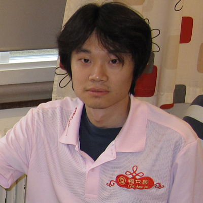

祝贺曹冬获得第12届世锦赛冠军！
首页
五子棋新闻
#1 祝贺曹冬获得第12届世锦赛冠军！ 作者：蓝天蓝 发表时间：2011-8-10 22:22:41
祝贺曹冬获得第12届世锦赛冠军！
作者：那威
原文网址链接：http://www.rifchina.com/Article/ShowArticle.asp?ArticleID=6474

热烈祝贺中国选手曹冬继去年，取得世团赛冠军后，在瑞典刚刚结束的第12届世锦赛最后一轮比赛中轻松取胜，以不败战绩取得个人世界冠军。中华台北林皇羽取得亚军，中国香港黄金贤取得季军，中国戴晓涵取得第五。这是全国全球华人五子棋爱好者的骄傲，这是中国棋院正确管理五子棋结的硕果，中国五子棋在世界可以说顶天立地了。中国五子棋万岁！
国际连珠联盟中国事务部主席、那威五子棋俱乐部主席那威
北京棋类协会五子棋分会
北京够棒教育那威棋校副校长陈伟
中国连珠网
中国连珠励精教室
［此帖子已被 蓝天蓝 在 2011-8-10 22:24:02 编辑过］
#2 Re:祝贺曹冬获得第12届世锦赛冠军！ 作者：梧桐风 发表时间：2011-8-10 22:26:01
有点迷茫哥的味道
#3 Re:祝贺曹冬获得第12届世锦赛冠军！ 作者：岑小鱼 发表时间：2011-8-10 22:28:27
祝贺。。。。。。。。
#4 Re:祝贺曹冬获得第12届世锦赛冠军！ 作者：五连达人 发表时间：2011-8-10 22:29:39
祝贺
#5 Re:祝贺曹冬获得第12届世锦赛冠军！ 作者：慕容晓文 发表时间：2011-8-10 22:36:22
曹冬胖了
#6 Re:祝贺曹冬获得第12届世锦赛冠军！ 作者：业余九级菜手 发表时间：2011-8-10 22:41:48
祝贺曹冬获得第十二届世锦赛冠军！
#7 Re:祝贺曹冬获得第12届世锦赛冠军！ 作者：啊呆 发表时间：2011-8-10 22:51:48
热烈祝贺曹冬大师
#8 Re:祝贺曹冬获得第12届世锦赛冠军！ 作者：忧郁的双眼 发表时间：2011-8-10 23:55:23
福口居 哇哈哈
祝贺冬神
#9 Re:祝贺曹冬获得第12届世锦赛冠军！ 作者：冰冰的泪 发表时间：2011-8-10 23:55:54
祝贺曹冬大师夺冠，大师辛苦了！！！
#10 Re:祝贺曹冬获得第12届世锦赛冠军！ 作者：小红眼镜 发表时间：2011-8-11 0:05:57
冬冬大神V5~~
#11 Re:祝贺曹冬获得第12届世锦赛冠军！ 作者：一问道一 发表时间：2011-8-11 0:35:45
冬冬V5
#12 Re:祝贺曹冬获得第12届世锦赛冠军！ 作者：珍惜你和我 发表时间：2011-8-11 0:55:20
 那威？
那威？
#13 Re:祝贺曹冬获得第12届世锦赛冠军！ 作者：堇色 发表时间：2011-8-11 1:02:57
今天忙，来晚了。。。睡觉前gen贴祝贺曹冬大师！
还有其他大师。。。这届比赛的对局很精彩~
#14 Re:祝贺曹冬获得第12届世锦赛冠军！ 作者：雅匪 发表时间：2011-8-11 2:09:15
祝贺加谢谢
#15 Re:祝贺曹冬获得第12届世锦赛冠军！ 作者：小帮帮 发表时间：2011-8-11 2:14:07
冬瓜大神V5啦